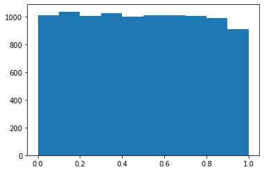

from pathlib import Path
import pickle, gzip, math, os, time, shutil, matplotlib as mpl, matplotlib.pyplot as pltp2-01 Matrix Multiplication From Foundation.
fastai
Foundations
Creating matrix multiplication from foundation me. With just
python
Matrix multiplication from foundations
The foundations we’ll assume throughout this course are:
- Python
- matplotlib
- The Python standard library
- Jupyter notebooks and nbdev
Get data
MNIST_URL='https://github.com/mnielsen/neural-networks-and-deep-learning/blob/master/data/mnist.pkl.gz?raw=true'
path_data = Path('data')
path_data.mkdir(exist_ok=True)
path_gz = path_data/'mnist.pkl.gz'urlretrieve - (read the docs!)
from urllib.request import urlretrieve
if not path_gz.exists(): urlretrieve(MNIST_URL, path_gz)!ls -l datatotal 16656
-rw-r--r-- 1 root root 17051982 Mar 19 19:33 mnist.pkl.gzReading in the data from .pickle file
with gzip.open(path_gz, 'rb') as f: ((x_train, y_train), (x_valid, y_valid), _) = pickle.load(f, encoding='latin-1')Since we are only using Python and data comes as a numpy array we will convert it to a list.
lst1 = list(x_train[0])
vals = lst1[200:210]
vals[0.0,
0.0,
0.0,
0.19140625,
0.9296875,
0.98828125,
0.98828125,
0.98828125,
0.98828125,
0.98828125]len(lst1)784Now our images are stored as 784 long list, we want it to be 28 by 28 list.
That’s why we create chunks function.
def my_chunks(x,sz):
return [x[i:i+sz] for i in range(0, len(x), sz)]def chunks(x, sz):
for i in range(0, len(x), sz): yield x[i:i+sz]My way to create a chunk is little slower but doesn’t use yield method.
yield method returns a generator object which can be used to iterate over the values produced by the function.
1.28 µs ± 516 ns per loop (mean ± std. dev. of 7 runs, 1000000 loops each)
940 ns ± 457 ns per loop (mean ± std. dev. of 7 runs, 1000000 loops each)list(chunks(vals,5)),my_chunks(vals,5)([[0.0, 0.0, 0.0, 0.19140625, 0.9296875],
[0.98828125, 0.98828125, 0.98828125, 0.98828125, 0.98828125]],
[[0.0, 0.0, 0.0, 0.19140625, 0.9296875],
[0.98828125, 0.98828125, 0.98828125, 0.98828125, 0.98828125]])mpl.rcParams['image.cmap'] = 'gray'
plt.imshow(list(chunks(lst1, 28)));
from itertools import isliceit = iter(vals)
islice(it, 5)<itertools.islice at 0x7efbf01219a0>Returns “sliced” iterator that generates the specified slice of the original iterable.
list(islice(it, 5))[0.0, 0.0, 0.0, 0.19140625, 0.9296875]Called again on the same iterable shows another “slice”
list(islice(it, 5))[0.98828125, 0.98828125, 0.98828125, 0.98828125, 0.98828125]list(islice(it, 5))[]it = iter(lst1)
img = list(iter(lambda: list(islice(it, 28)), []))it -> iterator of images
img -> returns another slice from it
plt.imshow(img);
Matrix and tensor
img[20][15]0.98828125But we what to index our Matrix matrix[20,15]
So lets create a class that allows us to do so
class Matrix:
def __init__(self, xs): self.xs = xs
def __getitem__(self, idxs): return self.xs[idxs[0]][idxs[1]]m = Matrix(img)
m[20,15]0.98828125[Tensor Unlocked üåü]
import torch
from torch import tensortensor([1,2,3])tensor([1, 2, 3])We can use map to convert our data to tensor type
x_train,y_train,x_valid,y_valid = map(tensor, (x_train,y_train,x_valid,y_valid))
x_train.shapetorch.Size([50000, 784])x_train.type()'torch.FloatTensor'-1 could be replace by 50000, but -1 just means fill all the data
imgs = x_train.reshape((-1,28,28))
imgs.shapetorch.Size([50000, 28, 28])plt.imshow(imgs[0]);
imgs[0,20,15]tensor(0.9883)x_train.shapetorch.Size([50000, 784])n,c = x_train.shape
y_train, y_train.shape(tensor([5, 0, 4, ..., 8, 4, 8]), torch.Size([50000]))min(y_train),max(y_train)(tensor(0), tensor(9))y_train.min(), y_train.max()(tensor(0), tensor(9))Random numbers
Based on the Wichmann Hill algorithm used before Python 2.3.
rnd_state = None
def seed(a):
global rnd_state
a, x = divmod(a, 30268)
a, y = divmod(a, 30306)
a, z = divmod(a, 30322)
rnd_state = int(x)+1, int(y)+1, int(z)+1seed(9136644127346)
rnd_state(8675, 10445, 9961)def rand():
global rnd_state
x, y, z = rnd_state
x = (171 * x) % 30269
y = (172 * y) % 30307
z = (170 * z) % 30323
rnd_state = x,y,z
return (x/30269 + y/30307 + z/30323) % 1.0rand(),rand(),rand()(0.13052416218830465, 0.7532777742751993, 0.08643536352946324)if os.fork(): print(f'In parent: {rand()}')
else:
print(f'In child: {rand()}')
os._exit(os.EX_OK)In parent: 0.3403345321405016
In child: 0.3403345321405016if os.fork(): print(f'In parent: {torch.rand(1)}')
else:
print(f'In child: {torch.rand(1)}')
os._exit(os.EX_OK)In parent: tensor([0.8574])
In child: tensor([0.8574])import random
if os.fork(): print(f'In parent: {random.random()}')
else:
print(f'In child: {random.random()}')
os._exit(os.EX_OK)In parent: 0.6107283594751433
In child: 0.9296917080075688plt.plot([rand() for _ in range(50)]);plt.hist([rand() for _ in range(10000)]);
8.57 ms ± 1.31 ms per loop (mean ± std. dev. of 7 runs, 10 loops each)As we can see pytorch rand version is much faster
The slowest run took 6.66 times longer than the fastest. This could mean that an intermediate result is being cached.
106 µs ± 99 µs per loop (mean ± std. dev. of 7 runs, 10 loops each)Matrix multiplication
torch.manual_seed(1)
weights = torch.randn(784,10)
bias = torch.zeros(10)weights[:5],bias(tensor([[-1.5256, -0.7502, -0.6540, -1.6095, -0.1002, -0.6092, -0.9798, -1.6091,
-0.7121, 0.3037],
[-0.7773, -0.2515, -0.2223, 1.6871, 0.2284, 0.4676, -0.6970, -1.1608,
0.6995, 0.1991],
[ 0.8657, 0.2444, -0.6629, 0.8073, 1.1017, -0.1759, -2.2456, -1.4465,
0.0612, -0.6177],
[-0.7981, -0.1316, 1.8793, -0.0721, 0.1578, -0.7735, 0.1991, 0.0457,
0.1530, -0.4757],
[-0.1110, 0.2927, -0.1578, -0.0288, 2.3571, -1.0373, 1.5748, -0.6298,
-0.9274, 0.5451]]),
tensor([0., 0., 0., 0., 0., 0., 0., 0., 0., 0.]))m1 = x_valid[:5]
m2 = weightsLets grab 5 images from the validation set. m1 - is our image m2 - are our weights
m1.shape,m2.shape(torch.Size([5, 784]), torch.Size([784, 10]))ar,ac = m1.shape # n_rows * n_cols
br,bc = m2.shape
(ar,ac),(br,bc)((5, 784), (784, 10))t1 = torch.zeros(ar, bc)
t1.shapetorch.Size([5, 10])This is dot product of m1 and m2 tensors
row = -1
column = 0
t1[:,row],t1[column,:](tensor([0., 0., 0., 0., 0.]),
tensor([0., 0., 0., 0., 0., 0., 0., 0., 0., 0.]))Doing a dot product:
for i in range(ar): # 5
for j in range(bc): # 10
for k in range(ac): # 784
t1[i,j] += m1[i,k] * m2[k,j]Here is the result:
t1tensor([[-10.9417, -0.6844, -7.0038, -4.0066, -2.0857, -3.3588, 3.9127,
-3.4375, -11.4696, -2.1153],
[ 14.5430, 5.9977, 2.8914, -4.0777, 6.5914, -14.7383, -9.2787,
2.1577, -15.2772, -2.6758],
[ 2.2204, -3.2171, -4.7988, -6.0453, 14.1661, -8.9824, -4.7922,
-5.4446, -20.6758, 13.5657],
[ -6.7097, 8.8998, -7.4611, -7.8966, 2.6994, -4.7260, -11.0278,
-12.9776, -6.4443, 3.6376],
[ -2.4444, -6.4034, -2.3984, -9.0371, 11.1772, -5.7724, -8.9214,
-3.7862, -8.9827, 5.2797]])As we can see there are identical.
m1 @ m2tensor([[-10.9417, -0.6844, -7.0038, -4.0066, -2.0857, -3.3588, 3.9127,
-3.4375, -11.4696, -2.1153],
[ 14.5430, 5.9977, 2.8914, -4.0777, 6.5914, -14.7383, -9.2787,
2.1577, -15.2772, -2.6758],
[ 2.2204, -3.2171, -4.7988, -6.0453, 14.1661, -8.9824, -4.7922,
-5.4446, -20.6758, 13.5657],
[ -6.7097, 8.8998, -7.4611, -7.8966, 2.6994, -4.7260, -11.0278,
-12.9776, -6.4443, 3.6376],
[ -2.4444, -6.4034, -2.3984, -9.0371, 11.1772, -5.7724, -8.9214,
-3.7862, -8.9827, 5.2797]])t1.shapetorch.Size([5, 10])torch.set_printoptions(precision=2, linewidth=140, sci_mode=False)
t1tensor([[-10.94, -0.68, -7.00, -4.01, -2.09, -3.36, 3.91, -3.44, -11.47, -2.12],
[ 14.54, 6.00, 2.89, -4.08, 6.59, -14.74, -9.28, 2.16, -15.28, -2.68],
[ 2.22, -3.22, -4.80, -6.05, 14.17, -8.98, -4.79, -5.44, -20.68, 13.57],
[ -6.71, 8.90, -7.46, -7.90, 2.70, -4.73, -11.03, -12.98, -6.44, 3.64],
[ -2.44, -6.40, -2.40, -9.04, 11.18, -5.77, -8.92, -3.79, -8.98, 5.28]])import numpy as np
np.set_printoptions(precision=2, linewidth=140)def matmul(a,b):
(ar,ac),(br,bc) = a.shape,b.shape
c = torch.zeros(ar, bc)
for i in range(ar):
for j in range(bc):
for k in range(ac): c[i,j] += a[i,k] * b[k,j]
return cCPU times: user 616 ms, sys: 2.94 ms, total: 619 ms
Wall time: 632 mstensor([[-10.94, -0.68, -7.00, -4.01, -2.09, -3.36, 3.91, -3.44, -11.47, -2.12],
[ 14.54, 6.00, 2.89, -4.08, 6.59, -14.74, -9.28, 2.16, -15.28, -2.68],
[ 2.22, -3.22, -4.80, -6.05, 14.17, -8.98, -4.79, -5.44, -20.68, 13.57],
[ -6.71, 8.90, -7.46, -7.90, 2.70, -4.73, -11.03, -12.98, -6.44, 3.64],
[ -2.44, -6.40, -2.40, -9.04, 11.18, -5.77, -8.92, -3.79, -8.98, 5.28]])ar*bc*ac39200Numba
We are importing
njitdecorator since:
@njit decorator is used to optimize the function using the Numba library’s just-in-time (JIT) compilation, which can significantly improve performance.
from numba import njit@njit
def dot(a,b):
res = 0.
for i in range(len(a)): res+=a[i]*b[i]
return resfrom numpy import arrayCPU times: user 361 ms, sys: 142 ms, total: 503 ms
Wall time: 440 ms20.0def m_dot(a,b):
res = 0.
for i in range(len(a)): res+=a[i]*b[i]
return resAlthough it dosn’t seem faster on small scale, it speeds things up with more complex functions.
CPU times: user 28 µs, sys: 2 µs, total: 30 µs
Wall time: 33.6 µs20.0Now only two of our loops are running in Python, not three:
def matmul(a,b):
(ar,ac),(br,bc) = a.shape,b.shape
c = torch.zeros(ar, bc)
for i in range(ar):
for j in range(bc): c[i,j] = dot(a[i,:], b[:,j])
return cnumba does not work with pytorch tensors so let’s convert them to numpy arrays
m1a,m2a = m1.numpy(),m2.numpy()from fastcore.test import *test_close(t1,matmul(m1a, m2a))455 µs ± 52.8 µs per loop (mean ± std. dev. of 7 runs, 50 loops each)Here we can see that it is quite faster than our old matmul.
Elementwise ops
a = tensor([10., 6, -4])
b = tensor([2., 8, 7])
a,b(tensor([10., 6., -4.]), tensor([2., 8., 7.]))a + btensor([12., 14., 3.])a<btensor([False, True, True])Python converts True to 1 and False to 0
(a < b).float().mean()tensor(0.67)m = tensor([[1., 2, 3], [4,5,6], [7,8,9]]); mtensor([[1., 2., 3.],
[4., 5., 6.],
[7., 8., 9.]])Frobenius norm:
\[\| A \|_F = \left( \sum_{i,j=1}^n | a_{ij} |^2 \right)^{1/2}\]
Hint: you don’t normally need to write equations in LaTeX yourself, instead, you can click ‘edit’ in Wikipedia and copy the LaTeX from there (which is what I did for the above equation). Or on arxiv.org, click “Download: Other formats” in the top right, then “Download source”; rename the downloaded file to end in .tgz if it doesn’t already, and you should find the source there, including the equations to copy and paste. This is the source LaTeX that I pasted to render the equation above:
$$\| A \|_F = \left( \sum_{i,j=1}^n | a_{ij} |^2 \right)^{1/2}$$sf = (m*m).sum()
sftensor(285.)sf.sqrt()tensor(16.88)m[2,:],m[:,2](tensor([7., 8., 9.]), tensor([3., 6., 9.]))m[2]tensor([7., 8., 9.])def matmul(a,b):
(ar,ac),(br,bc) = a.shape,b.shape
c = torch.zeros(ar, bc)
for i in range(ar):
for j in range(bc): c[i,j] = (a[i,:] * b[:,j]).sum()
return ctest_close(t1,matmul(m1, m2))%timeit with Numba
241 µs ± 33.6 µs per loop (mean ± std. dev. of 7 runs, 50 loops each)
1.02 ms ± 73.6 µs per loop (mean ± std. dev. of 7 runs, 50 loops each)def matmul(a,b):
(ar,ac),(br,bc) = a.shape,b.shape
c = torch.zeros(ar, bc)
for i in range(ar):
for j in range(bc): c[i,j] = torch.dot(a[i,:], b[:,j])
return ctest_close(t1,matmul(m1, m2))795 µs ± 91.6 µs per loop (mean ± std. dev. of 7 runs, 50 loops each)Numba solution is still faster, but this solution is also fast and works with tensors
Broadcasting
The term broadcasting describes how arrays with different shapes are treated during arithmetic operations.
From the Numpy Documentation:
The term broadcasting describes how numpy treats arrays with
different shapes during arithmetic operations. Subject to certain
constraints, the smaller array is “broadcast” across the larger
array so that they have compatible shapes. Broadcasting provides a
means of vectorizing array operations so that looping occurs in C
instead of Python. It does this without making needless copies of
data and usually leads to efficient algorithm implementations.In addition to the efficiency of broadcasting, it allows developers to write less code, which typically leads to fewer errors.
This section was adapted from Chapter 4 of the fast.ai Computational Linear Algebra course.
Broadcasting with a scalar
atensor([10., 6., -4.])a > 0tensor([ True, True, False])How are we able to do a > 0? 0 is being broadcast to have the same dimensions as a.
For instance you can normalize our dataset by subtracting the mean (a scalar) from the entire data set (a matrix) and dividing by the standard deviation (another scalar), using broadcasting.
Other examples of broadcasting with a scalar:
a + 1tensor([11., 7., -3.])mtensor([[1., 2., 3.],
[4., 5., 6.],
[7., 8., 9.]])2*mtensor([[ 2., 4., 6.],
[ 8., 10., 12.],
[14., 16., 18.]])Broadcasting a vector to a matrix
Although broadcasting a scalar is an idea that dates back to APL, the more powerful idea of broadcasting across higher rank tensors comes from a little known language called Yorick.
We can also broadcast a vector to a matrix:
c = tensor([10.,20,30]); ctensor([10., 20., 30.])mtensor([[1., 2., 3.],
[4., 5., 6.],
[7., 8., 9.]])m.shape,c.shape(torch.Size([3, 3]), torch.Size([3]))m + ctensor([[11., 22., 33.],
[14., 25., 36.],
[17., 28., 39.]])c + mtensor([[11., 22., 33.],
[14., 25., 36.],
[17., 28., 39.]])t = c.expand_as(m)ttensor([[10., 20., 30.],
[10., 20., 30.],
[10., 20., 30.]])m + ttensor([[11., 22., 33.],
[14., 25., 36.],
[17., 28., 39.]])We don’t really copy the rows, but it looks as if we did. In fact, the rows are given a stride of 0.
t.storage() 10.0
20.0
30.0
[torch.storage.TypedStorage(dtype=torch.float32, device=cpu) of size 3]t.stride(), t.shape((0, 1), torch.Size([3, 3]))You can index with the special value [None] or use unsqueeze() to convert a 1-dimensional array into a 2-dimensional array (although one of those dimensions has value 1).
ctensor([10., 20., 30.])c.unsqueeze(0), c[None, :], c[:,None] # c[:,:] dosn't work(tensor([[10., 20., 30.]]), tensor([[10., 20., 30.]]), tensor([[10.],
[20.],
[30.]]))c.shape, c.unsqueeze(0).shape(torch.Size([3]), torch.Size([1, 3]))c.unsqueeze(1), c[:, None](tensor([[10.],
[20.],
[30.]]), tensor([[10.],
[20.],
[30.]]))c.shape, c.unsqueeze(1).shape(torch.Size([3]), torch.Size([3, 1]))You can always skip trailling ‘:’s. And’…’ means ‘all preceding dimensions’
c[None].shape,c[...,None].shape(torch.Size([1, 3]), torch.Size([3, 1]))c[:,None].expand_as(m),"OLD",c.expand_as(m)(tensor([[10., 10., 10.],
[20., 20., 20.],
[30., 30., 30.]]), 'OLD', tensor([[10., 20., 30.],
[10., 20., 30.],
[10., 20., 30.]]))m + c[:,None]tensor([[11., 12., 13.],
[24., 25., 26.],
[37., 38., 39.]])m + c[None,:]tensor([[11., 22., 33.],
[14., 25., 36.],
[17., 28., 39.]])NOTE
C[columns,rows]indexing *C[None.:]WHEREcolumnis none so we add on rows *C[:,None]WHERErowsis None so we add on columns
Broadcasting Rules
c[None,:],c[None,:].shape(tensor([[10., 20., 30.]]), torch.Size([1, 3]))c[:,None],c[:,None].shape(tensor([[10.],
[20.],
[30.]]), torch.Size([3, 1]))c[None,:] * c[:,None]tensor([[100., 200., 300.],
[200., 400., 600.],
[300., 600., 900.]])c[None] > c[:,None]tensor([[False, True, True],
[False, False, True],
[False, False, False]])m*mtensor([[ 1., 4., 9.],
[16., 25., 36.],
[49., 64., 81.]])When operating on two arrays/tensors, Numpy/PyTorch compares their shapes element-wise. It starts with the trailing dimensions, and works its way forward. Two dimensions are compatible when
- they are equal, or
- one of them is 1, in which case that dimension is broadcasted to make it the same size
Arrays do not need to have the same number of dimensions. For example, if you have a 256*256*3 array of RGB values, and you want to scale each color in the image by a different value, you can multiply the image by a one-dimensional array with 3 values. Lining up the sizes of the trailing axes of these arrays according to the broadcast rules, shows that they are compatible:
Image (3d array): 256 x 256 x 3
Scale (1d array): 3
Result (3d array): 256 x 256 x 3The numpy documentation includes several examples of what dimensions can and can not be broadcast together.
TEST_1, TEST_2 = torch.tensor([[2,2,2],[2,2,2]]), torch.tensor([[3,3,3],[3,3,3],[3,3,3]])
try:
TEST_1 * TEST_2
except:
print("This will return an error since the dimensions are not compatible")This will return an error since the dimensions are not compatibleMatmul with broadcasting
digit = m1[0]
digit.shape,m2.shape(torch.Size([784]), torch.Size([784, 10]))digit[:,None].shapetorch.Size([784, 1])We need to ‘reshape’ our digit so it is possible to multiply by our weights.
digit[:,None].expand_as(m2).shapetorch.Size([784, 10])The shape of our output.
(digit[:,None]*m2).shapetorch.Size([784, 10])def matmul(a,b):
(ar,ac),(br,bc) = a.shape,b.shape
c = torch.zeros(ar, bc)
for i in range(ar):
# c[i,j] = (a[i,:] * b[:,j]).sum() # previous version
c[i] = (a[i,:,None] * b).sum(dim=0) # broadcast version
return ctest_close(t1,matmul(m1, m2))135 µs ± 27.9 µs per loop (mean ± std. dev. of 7 runs, 50 loops each)Our time has gone from ~500ms to <0.1ms, an over 5000x improvement! We can run on the whole dataset now.
tr = matmul(x_train, weights)
trtensor([[ 0.96, -2.96, -2.11, ..., -15.09, -17.69, 0.60],
[ 6.89, -0.34, 0.79, ..., -17.13, -25.36, 16.23],
[-10.18, 7.38, 4.13, ..., -6.73, -6.79, -1.58],
...,
[ 7.40, 7.64, -3.50, ..., -1.02, -16.22, 2.07],
[ 3.25, 9.52, -9.37, ..., 2.98, -19.58, -1.96],
[ 15.70, 4.12, -5.62, ..., 8.08, -12.21, 0.42]])tr.shapetorch.Size([50000, 10])CPU times: user 1.22 s, sys: 9.29 ms, total: 1.23 s
Wall time: 1.24 sEinstein summation
Einstein summation (einsum) is a compact representation for combining products and sums in a general way. The key rules are:
- Repeating letters between input arrays means that values along those axes will be multiplied together.
- Omitting a letter from the output means that values along that axis will be summed.
m1.shape,m2.shape(torch.Size([5, 784]), torch.Size([784, 10]))The notation ik,kj->ij is used to perform matrix multiplication between two matrices m1 and m2.
The first part of the notation ik refers to the dimensions of the first matrix m1. The second part of the notation kj refers to the dimensions of the second matrix m2.
The last part of the notation ij refers to the dimensions of the output matrix mr. The dimensions of the output matrix mr are determined by the dimensions of the input matrices m1 and m2.
Where i and j are the dimensions of the input matrices, and k is the common dimension of the two matrices.
torch.einsum('ik,kj -> ij',m1,m2).shape,torch.einsum('ik,kj -> ikj',m1,m2).shape(torch.Size([5, 10]), torch.Size([5, 784, 10]))# c[i,j] += a[i,k] * b[k,j]
# c[i,j] = (a[i,:] * b[:,j]).sum()
mr = torch.einsum('ik,kj->ikj', m1, m2)
mr.shapetorch.Size([5, 784, 10])mr.sum(1)tensor([[-10.94, -0.68, -7.00, -4.01, -2.09, -3.36, 3.91, -3.44, -11.47, -2.12],
[ 14.54, 6.00, 2.89, -4.08, 6.59, -14.74, -9.28, 2.16, -15.28, -2.68],
[ 2.22, -3.22, -4.80, -6.05, 14.17, -8.98, -4.79, -5.44, -20.68, 13.57],
[ -6.71, 8.90, -7.46, -7.90, 2.70, -4.73, -11.03, -12.98, -6.44, 3.64],
[ -2.44, -6.40, -2.40, -9.04, 11.18, -5.77, -8.92, -3.79, -8.98, 5.28]])torch.einsum('ik,kj->ij', m1, m2)tensor([[-10.94, -0.68, -7.00, -4.01, -2.09, -3.36, 3.91, -3.44, -11.47, -2.12],
[ 14.54, 6.00, 2.89, -4.08, 6.59, -14.74, -9.28, 2.16, -15.28, -2.68],
[ 2.22, -3.22, -4.80, -6.05, 14.17, -8.98, -4.79, -5.44, -20.68, 13.57],
[ -6.71, 8.90, -7.46, -7.90, 2.70, -4.73, -11.03, -12.98, -6.44, 3.64],
[ -2.44, -6.40, -2.40, -9.04, 11.18, -5.77, -8.92, -3.79, -8.98, 5.28]])def matmul(a,b): return torch.einsum('ik,kj->ij', a, b)test_close(tr, matmul(x_train, weights), eps=1e-3)21.8 ms ± 490 µs per loop (mean ± std. dev. of 7 runs, 5 loops each)pytorch op
We can use pytorch’s function or operator directly for matrix multiplication.
test_close(tr, x_train@weights, eps=1e-3)21.2 ms ± 1.17 ms per loop (mean ± std. dev. of 7 runs, 5 loops each)CUDA
def matmul(grid, a,b,c):
i,j = grid
if i < c.shape[0] and j < c.shape[1]:
tmp = 0.
for k in range(a.shape[1]): tmp += a[i, k] * b[k, j]
c[i,j] = tmpres = torch.zeros(ar, bc)
matmul((1,1), m1, m2, res)
restensor([[0.00, 0.00, 0.00, 0.00, 0.00, 0.00, 0.00, 0.00, 0.00, 0.00],
[0.00, 6.00, 0.00, 0.00, 0.00, 0.00, 0.00, 0.00, 0.00, 0.00],
[0.00, 0.00, 0.00, 0.00, 0.00, 0.00, 0.00, 0.00, 0.00, 0.00],
[0.00, 0.00, 0.00, 0.00, 0.00, 0.00, 0.00, 0.00, 0.00, 0.00],
[0.00, 0.00, 0.00, 0.00, 0.00, 0.00, 0.00, 0.00, 0.00, 0.00]])def launch_kernel(kernel, grid_x, grid_y, *args, **kwargs):
for i in range(grid_x):
for j in range(grid_y): kernel((i,j), *args, **kwargs)res = torch.zeros(ar, bc)
launch_kernel(matmul, ar, bc, m1, m2, res)
restensor([[-10.94, -0.68, -7.00, -4.01, -2.09, -3.36, 3.91, -3.44, -11.47, -2.12],
[ 14.54, 6.00, 2.89, -4.08, 6.59, -14.74, -9.28, 2.16, -15.28, -2.68],
[ 2.22, -3.22, -4.80, -6.05, 14.17, -8.98, -4.79, -5.44, -20.68, 13.57],
[ -6.71, 8.90, -7.46, -7.90, 2.70, -4.73, -11.03, -12.98, -6.44, 3.64],
[ -2.44, -6.40, -2.40, -9.04, 11.18, -5.77, -8.92, -3.79, -8.98, 5.28]])from numba import cudadef matmul(grid, a,b,c):
i,j = grid
if i < c.shape[0] and j < c.shape[1]:
tmp = 0.
for k in range(a.shape[1]): tmp += a[i, k] * b[k, j]
c[i,j] = tmp@cuda.jit
def matmul(a,b,c):
i, j = cuda.grid(2)
if i < c.shape[0] and j < c.shape[1]:
tmp = 0.
for k in range(a.shape[1]): tmp += a[i, k] * b[k, j]
c[i,j] = tmpHere we are “Sending” our weights and images to the GPU
r = np.zeros(tr.shape)
m1g,m2g,rg = map(cuda.to_device, (x_train,weights,r))r.shape(50000, 10)TPB = 16
rr,rc = r.shape
blockspergrid = (math.ceil(rr / TPB), math.ceil(rc / TPB))
blockspergrid(3125, 1)matmul[blockspergrid, (TPB,TPB)](m1g,m2g,rg)
r = rg.copy_to_host()
test_close(tr, r, eps=1e-3)matmul[blockspergrid, (TPB,TPB)](m1g,m2g,rg)
r = rg.copy_to_host()11.3 ms ± 4.02 ms per loop (mean ± std. dev. of 7 runs, 10 loops each)m1c,m2c = x_train.cuda(),weights.cuda()r=(m1c@m2c).cpu()2.21 ms ± 361 µs per loop (mean ± std. dev. of 7 runs, 10 loops each)Our broadcasting version was >500ms, and our CUDA version is around 0.5ms, which is another 1000x improvement compared to broadcasting. So our total speedup is around 5 million times!